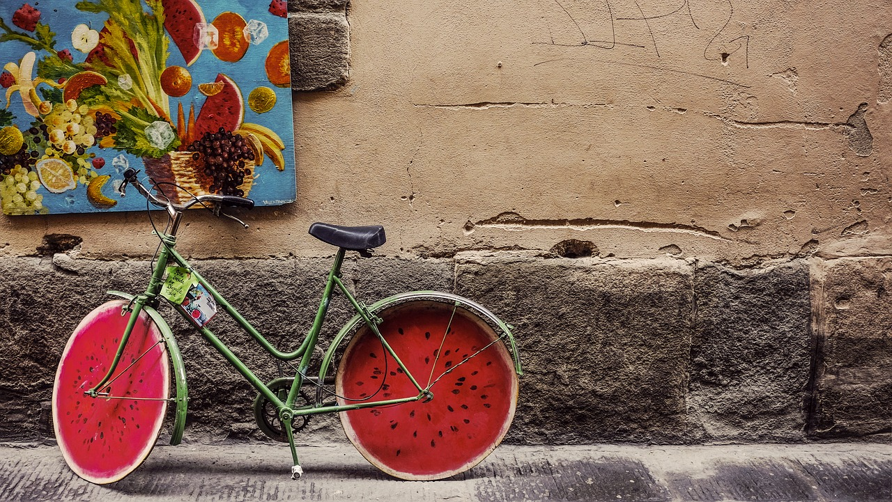

"Optimism" is a dangerous thing from the perspective of a programmer's profession. "Feedback" is
the solution. - Kent Beck
Hello, My name's Kim ji-yun! Welcome to my homepage.
I wandered for a long time.
The first was when I was a high school student, and the second was when I was a college
student.
The third time was when I was a member of society.
I don't think that time is wrong.
I don't think I can be a great developer.
But I want to be a developer who can do my part.
There are definitely times when I feel ashamed or depressed, but I believe there will be a
better tomorrow.
In case I don't see ya, good afternoon, good evening, and good night!